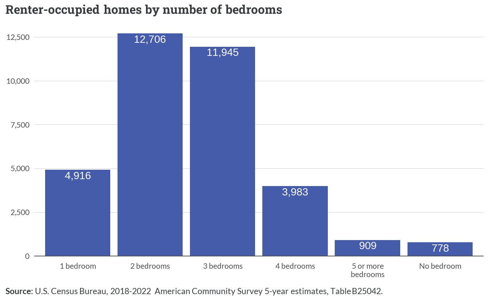
4 Rental market
4.1 Existing supply
Most of the approximate 35,240 rental homes in the Fredericksburg region have 2 or 3 bedrooms, with these sizes accounting for nearly 73% of all rental units. One-bedroom units make up about 14% of rentals, while larger homes with 4 or more bedrooms represent approximately 14% of the rental stock. A small number of rental units (778) have no bedrooms, typically representing studio apartments.
Single-family homes comprise the majority of rental properties in the region, with detached houses accounting for about 37% of units and attached homes making up another 16%. Multi-unit properties of varying sizes constitute about 45% of rentals, split between smaller properties with 2-4 units (6%), mid-sized buildings with 5-19 units (27%), and larger complexes with 20 or more units (12%). Manufactured homes account for 4% of rental properties.
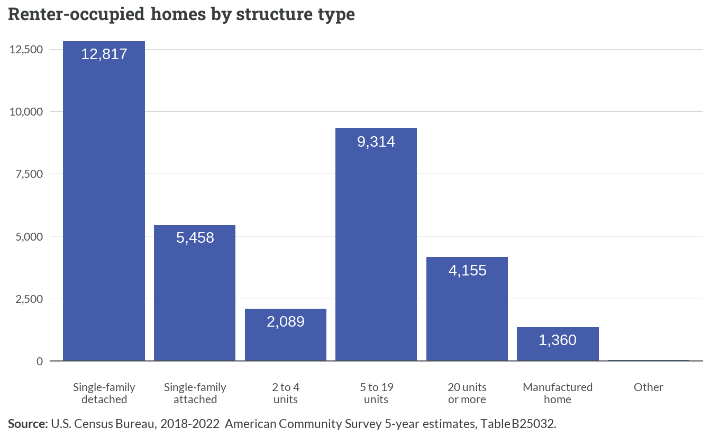
The most common rent range in the region is $1,500 to $1,999 per month, representing nearly 31% of all rental units. Another 27% of rentals fall between $1,000 and $1,499 monthly. Lower-cost units with rents under $1,000 make up about 15% of the market, while higher-end rentals above $2,000 represent approximately 22%. About 5% of rental units report no cash rent, typically indicating housing provided as part of employment or family arrangements.
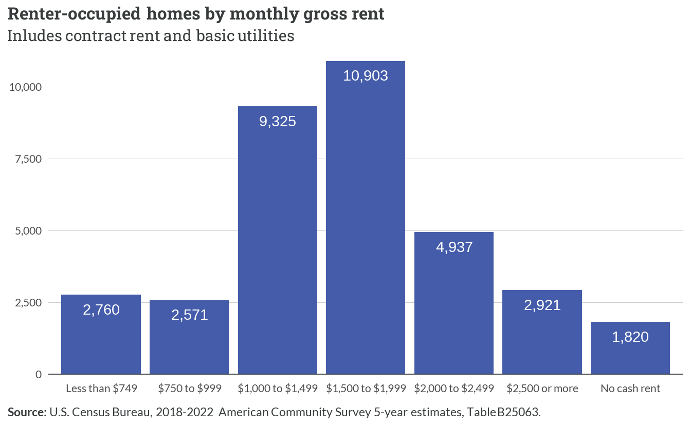
4.2 Building trends
Since the Census Building Permit Survey is unable to disaggregate building permits by tenure, this analysis assumes all multi-unit permits are for rental development. New multifamily building permits across the region show distinct patterns by structure type. The vast majority of permits have been issued for larger buildings with 5 or more units, with significant spikes in permitting activity occurring in the early 2000s and again in recent years. Meanwhile, permits for smaller multifamily structures, including 2-unit and 3-4 unit buildings, have remained consistently low throughout the period.
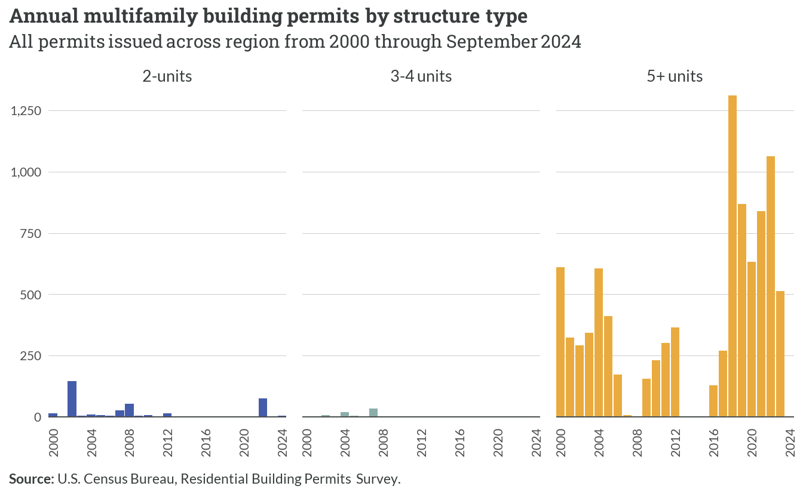
The cumulative total of multifamily permits issued since 2000 varies dramatically by locality. Spotsylvania County has seen the most substantial growth in multifamily permits, with a sharp acceleration starting around 2016. Stafford County shows steady but more moderate growth over the period, while Fredericksburg demonstrates consistent incremental increases. The remaining localities — Caroline, King George, and Orange — show minimal multifamily permitting activity over the past two decades.
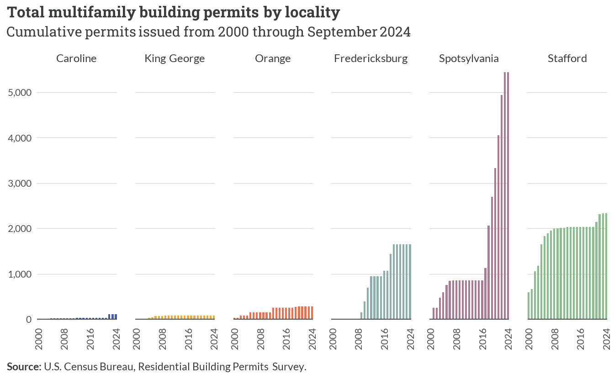
Based on CoStar data, construction activity for larger multifamily developments has fluctuated considerably since 2015. The number of units under construction peaked in early 2016 at over 1,700 units, followed by another significant surge in early 2019 reaching approximately 1,600 units. Recent quarters show a general downward trend in construction activity, with levels in 2023 falling below 600 units — some of the lowest observed in the time period.
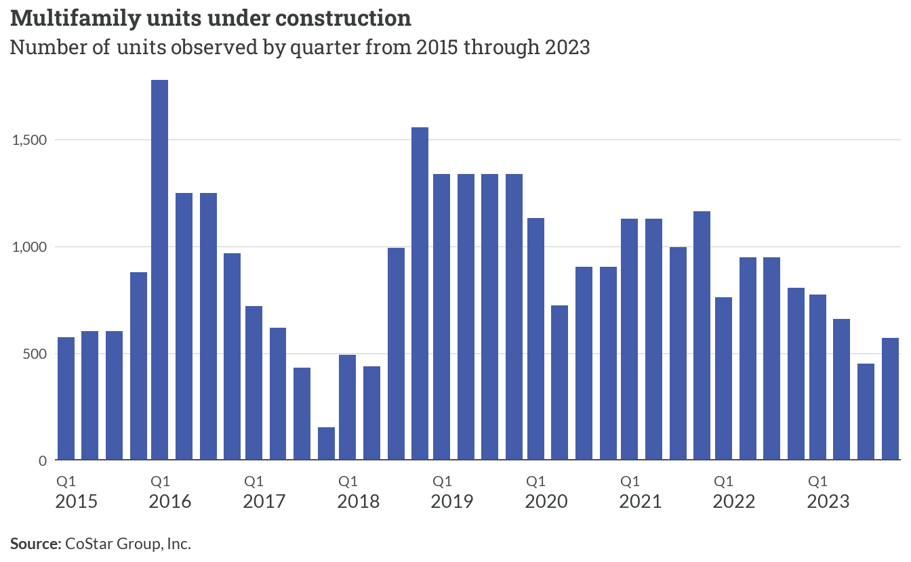
4.3 Market trends
The average asking rent in Fredericksburg has shown distinct patterns between nominal and inflation-adjusted values since 2015. While nominal rents steadily increased from around $1,200 to nearly $1,700 per unit, inflation-adjusted rents remained relatively stable between $1,700 and $1,800 until 2020. A notable spike occurred in 2021-2022, pushing inflation-adjusted rents above $1,900, before declining through 2023 and stabilizing near $1,750 in early 2024.
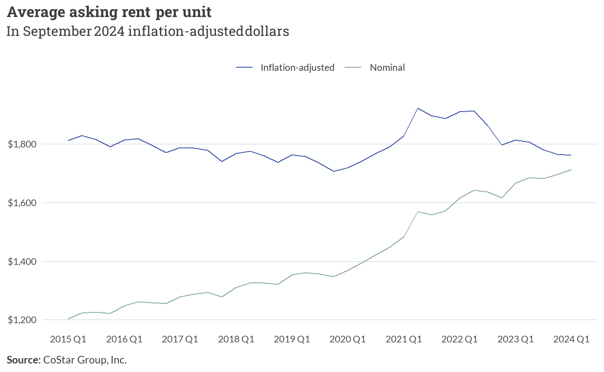
This cycle of average asking rents changing roughly $150 from 2021 to 2023 perhaps reflects the influence of COVID-era rental support systems and eviction prevention measures that were available in Virginia. These programs were largely phased out by 2023, with following years showing increased eviction rates and market rents rising.
The reduction in rent from 2021 to 2023 could also be attributed to population migration and the rise of remote work in the pandemic era. Many households doubled up, with singles finding roommates or living with family, or households moving from urban areas to rural communities where they can still work remotely and afford rent. As demand reduced for rentals from 2021 to 2023 as a result, increased vacancy rates and reduced competition for units would drive down rents accordingly.
Quarter-over-quarter changes in average asking rent reveal significant volatility in the market since 2015. The most dramatic increase occurred in mid-2021, when rents jumped by approximately $85 in a single quarter. More recent trends show moderating changes, with quarterly adjustments typically ranging between $10-50 since 2023, suggesting a gradual return to historical patterns of incremental changes.
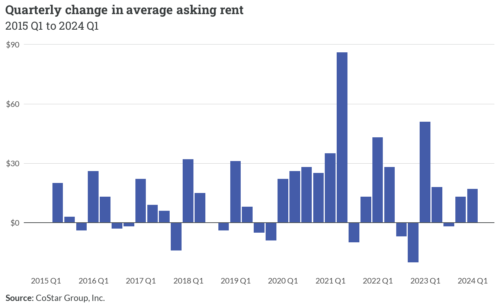
Vacancy rates give information about the rental market’s supply-demand balance and the general health of the rental market. Low rental vacancy rates constrain the rental market, making it more difficult for low-income tenants to compete for homes as there are net fewer apartments available. Declining vacancy rates have significant consequences for home affordability, and can highlight supply and demand mismatches.
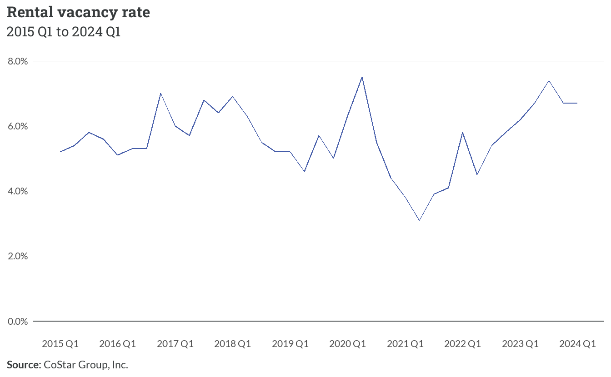
Through the COVID-19 pandemic era, rental vacancy rates across the country, including the Fredericksburg region, reached historic lows. The region has hovered around 6% vacancy rate since the pandemic, showing its position within the state as a rural-small market blend among the counties and growing exurbs.
A deeper examination at the year-to-year percent fluctuations reveals that, while the rental market loosened marginally in 2022 and 2023, with greater availability of rentals at decreasing prices. The most recent signs indicate the market tightening again, with the rental vacancy rate trending downward in 2024 with an estimated percent change in vacancy rate at -0.5%.
With the rental vacancy rate sitting near 6% currently, but a decreasing trend in the last four quarters, the region is likely seeing increasing monthly rental costs, as well as decreasing availability of units. This is also a factor that drives up rental prices.
4.4 Dedicated affordable rental housing
An array of federal housing assistance programs help low-income residents across the region with rental housing opportunities. Today, there are approximately 6,700 dedicated affordable rental homes found across 78 properties.
Stafford County leads the region with approximately 2,000 federally assisted housing units, followed closely by Fredericksburg City. Spotsylvania maintains a substantial presence with about 1,600 units, while Orange and King George counties have notably smaller inventories of roughly 400 and 350 units respectively. Caroline County has the smallest allocation with 145 units.
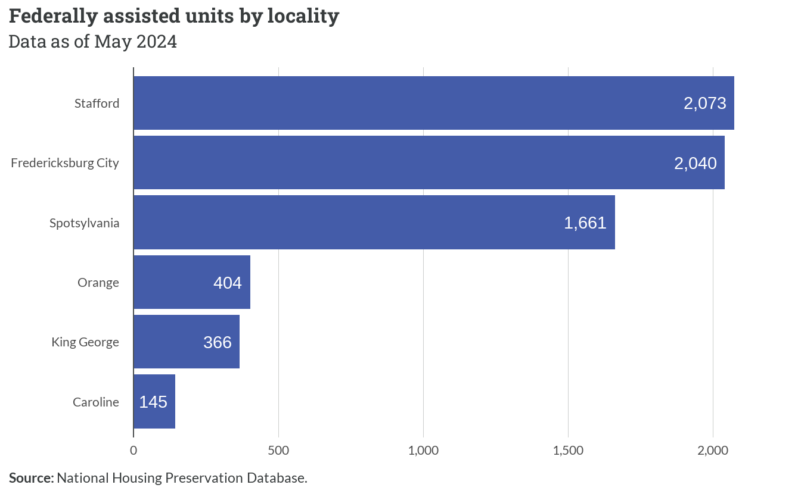
The Low Income Housing Tax Credit (LIHTC) program dominates the region’s subsidized housing landscape, accounting for over three-quarters of all units. Section 8 and HUD-insured properties each represent approximately 8-10% of the total inventory. USDA Rural Housing Service (RHS) 515 and HOME programs constitute smaller shares at 4% and 1.4% respectively.
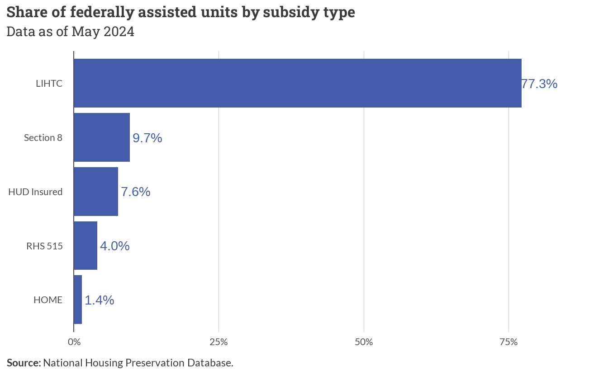
Important
It is important to note that Section 8 described above is not the same as Section 8 Housing Choice Vouchers. Section 8 subsidies in the NHPD refer to HUD project-based rental assistance — meaning that they are rental assistance that is tied to a specific development, whereas Section 8 Housing Choice Vouchers are tenant-based subsidies that a recipient can take wherever they can find housing.
In addition to those federally-assisted units, there are about 1,500 active Housing Choice Vouchers serving families throughout the region. In some cases, HCVs may be used at LIHTC properties to further lower tenants’ rents. Data is not readily available to determine how many units may have overlap.
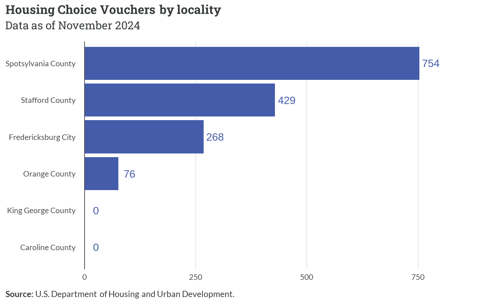
The region faces important timing considerations regarding subsidy preservation, with 57% of federally assisted units having subsidies expiring within the next 9 years. Approximately one-quarter of units will reach expiration within 5 years, while an additional third face expiration in the 5-9 year timeframe. Only about 11% of units have subsidies extending beyond 20 years.
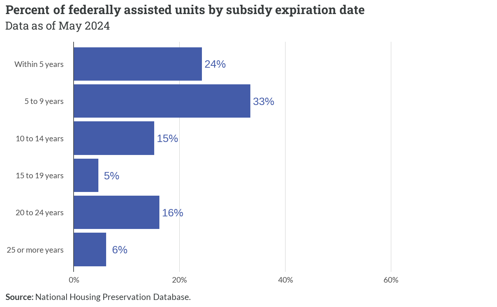